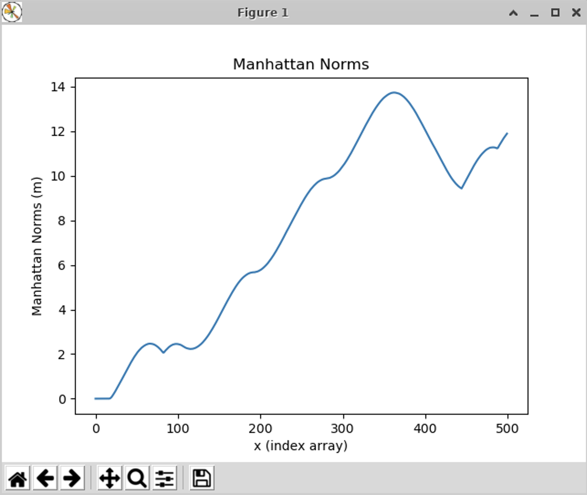
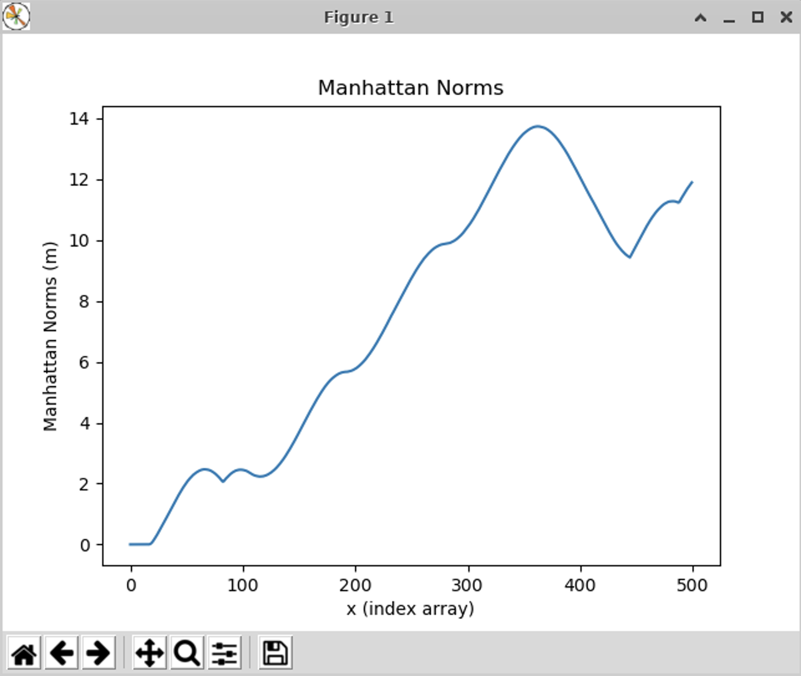
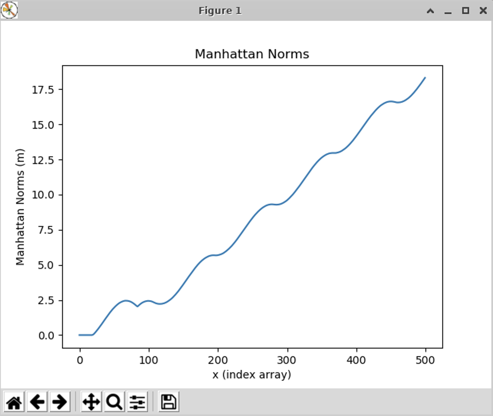
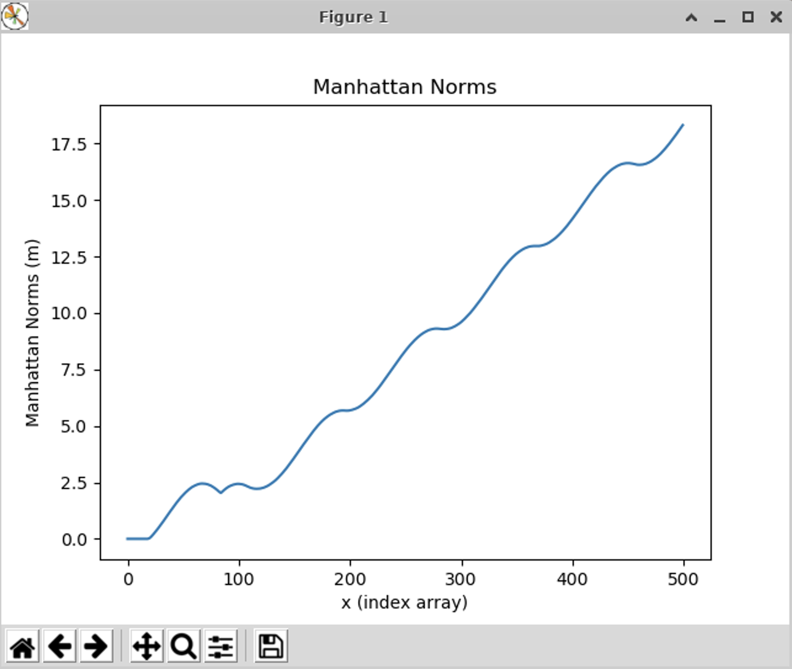

Foundations of Robotics
September - December 2024
Grade: A+
Objectives
- Robot Operating System (ROS)
- Publishers and Subscribers
- Running a car in simulation and visualizing the simulation with RViz
Part 1: Running a MuSHR Car in Simulation and Visualizing the Simulator using RViz
The simulation is set up for a kinematic car model that includes noise by implementing and integrating equations to describe the ideal motion of a mechanical system. The simulator is run using an XML launch file that specifies which ROS nodes should start. The visualizer is shown below.
 RViz Visualizer for MuSHR Car Simulation
RViz Visualizer for MuSHR Car Simulation
There are several features implemented in RViz to help visualize the simulator. On the right side is a views panel that includes options for the "Target Frame" such as "base_link" for traking the car or "map" for not traking. The top of the visualizer includes features such as a 2D Pose Estimate that returns the numerical coordinates of the cars position. The left side shows the ROS topics that are accessed by RViz including the "Map", "Grid", and "RobotModel".
After setting up the simulation and visualizer, a subscriber was created to calculated a Manhattan Norm. The calculation was implemented in two different ways including Python for loops and using functions from NumPy. The run time for both implementations were compared over 100 runs and the mean and standard deviation were plotted in the below graph.

The implementations shows that the execution time when using NumPy functions is faster than when using Python for loops. A subscriber was initialized to the car's pose topic. The x and y position of the car was extracted from the pose message and saved. The positions were ploted and the Manhattan Norm was computed for all xy-locations. Below are plots showing the path of the car along with the computed Manhattan Norms.


 

 
